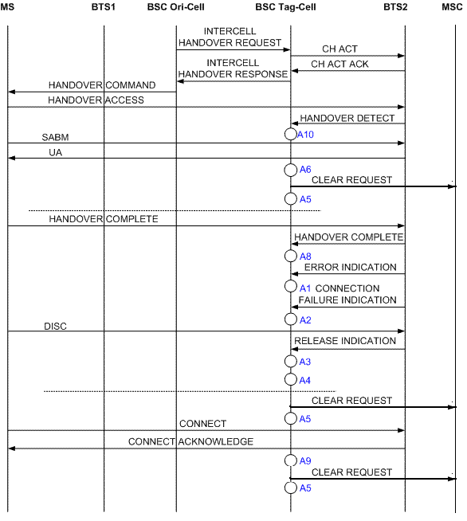

Measurement Counters
| ID | Counter | Description |
|---|---|---|
| 1278072524 | CELL.CONN | CM338:Successful Connections |
Description
This measurement provides the number of successful connections in the CS service. In the immediate assignment procedure, after establishing the MM connection, the calling MS sends a SETUP message to the BTS to request a call setup if a CC connection is required. Then the MSC returns a CALL PROCESSING message and pages the called MS. After establishing the MM connection with the called MS, the MSC sends a SETUP message to the called MS to establish the CC connection. If the called MS permits the call setup, the called MS responds with a CALL CONFIRMED message. After seizing a TCH, the called MS sends an ALERTING message to the MSC. Then, the MSC sends the ALERTING message to the calling MS. After the called MS answers, it sends a CONNECT message to the calling MS. The calling MS responds with a CONNECT ACKNOWLEDGE message. Then the call is successfully established and enters the conversation state.
This counter provides the number of CONNECT ACKNOWLEDGE messages received.
Measurement point
This counter is measured when the BSC detects a CONNECT ACKNOWLEDGE message.
This counter is calculated at A9, as shown in Figure 1, Figure 2, Figure 3 and Figure 4.

| Measurement points | Description |
|---|---|
| A1 | Call Drops Due to ERR IND Received in Stable State, Call Drops Due to the ERR IND Received on the TRX in the Underlaid Subcell in Stable State, Call Drops Due to the ERR IND Received on the TRX in the Overlaid Subcell in Stable State |
| A2 | Call Drops Due to the CONN FAIL IND Received in Stable State, Call Drops Due to the CONN FAIL IND Received on the TRX in the Underlaid Subcell in Stable State, Call Drops Due to the CONN FAIL IND Received on the TRX in the Overlaid Subcell in Stable State |
| A3 | Call Drops Due to REL IND Received in Stable State, Call Drops Due to the REL IND Received on the TRX in the Underlaid Subcell in Stable State, Call Drops Due to the REL IND Received on the TRX in the Overlaid Subcell in Stable State |
| A4 | Call Drops Due to No MR from MS for a Long Time, Call Drops Due to No MR from the MS on the TRX in the Underlaid Subcell, Call Drops Due to No MR from the MS on the TRX in the Overlaid Subcell, Call Drops due to Abis Terrestrial Link Failure, Call Drops Due to Abis Terrestrial Link Failure on the TRX in the Underlaid Subcell, Call Drops Due to Abis Terrestrial Link Failure on the TRX in the Overlaid Subcell, Call Drops Due to Abis Link Failures in Stable Local Switch State, Call Drops Due to Equipment Failure, Call Drops Due to TRX Failure in the Underlaid Subcell, Call Drops Due to TRX Failure in the Overlaid Subcell, Call Drops Due to Resource Check, Call Drops Due to Resource Check on the TRX in the Underlaid Subcell, Call Drops Due to Resource Check on the TRX in the Overlaid Subcell, Call Drops Due to Handover Failure During the Local Switch, Call Drops Due to Other Causes in Stable State |
| A5 | Clear Requests Sent on the A Interface, Call Drops after Answer, Call Drops After Answer on the TRX in the Underlaid Subcell, Call Drops After Answer on the TRX in the Overlaid Subcell |
| A6 | Call Drops Due to Forced Handover, Call Drops Due to Forced Handover on the TRX in the Underlaid Subcell, Call Drops Due to Forced Handover on the TRX in the Overlaid Subcell, Failed Internal Intra-Cell Handovers (Timer Expired) |
| A7 | Call Drops Due to Local Switch Start Failure |
| A8 | Successful TCH Seizures on the TRX in the Underlaid Subcell, Successful TCH Seizures on the TRX in the OverLaid Subcell, Call Drops Due to Failures to Return to Normal Call from Local Switch |
| A9 | Successful Connections |

| Measurement points | Description |
|---|---|
| A1 | Call Drops Due to ERR IND Received in Stable State, Call Drops Due to the ERR IND Received on the TRX in the Underlaid Subcell in Stable State, Call Drops Due to the ERR IND Received on the TRX in the Overlaid Subcell in Stable State |
| A2 | Call Drops Due to the CONN FAIL IND Received in Stable State, Call Drops Due to the CONN FAIL IND Received on the TRX in the Underlaid Subcell in Stable State, Call Drops Due to the CONN FAIL IND Received on the TRX in the Overlaid Subcell in Stable State |
| A3 | Call Drops Due to REL IND Received in Stable State, Call Drops Due to the REL IND Received on the TRX in the Underlaid Subcell in Stable State, Call Drops Due to the REL IND Received on the TRX in the Overlaid Subcell in Stable State |
| A4 | Call Drops Due to No MR from MS for a Long Time, Call Drops Due to No MR from the MS on the TRX in the Underlaid Subcell, Call Drops Due to No MR from the MS on the TRX in the Overlaid Subcell, Call Drops due to Abis Terrestrial Link Failure, Call Drops Due to Abis Terrestrial Link Failure on the TRX in the Underlaid Subcell, Call Drops Due to Abis Terrestrial Link Failure on the TRX in the Overlaid Subcell, Call Drops Due to Abis Link Failures in Stable Local Switch State, Call Drops Due to Equipment Failure, Call Drops Due to TRX Failure in the Underlaid Subcell, Call Drops Due to TRX Failure in the Overlaid Subcell, Call Drops due to Resource Check, Call Drops Due to Resource Check on the TRX in the Underlaid Subcell, Call Drops Due to Resource Check on the TRX in the Overlaid Subcell, Call Drops due to Other Causes Received in Stable State |
| A5 | Clear Requests Sent on the A Interface, Call Drops after Answer, Call Drops After Answer on the TRX in the Underlaid Subcell, Call Drops After Answer on the TRX in the Overlaid Subcell |
| A6 | Call Drops Due to Forced Handover, Call Drops Due to Forced Handover on the TRX in the Underlaid Subcell, Call Drops Due to Forced Handover on the TRX in the Overlaid Subcell, Failed Internal Intra-Cell Handovers (Timer Expired), Failed Outgoing Internal Inter-Cell Handovers (Timer Expired), Call Drops Due to Handover Failure During the Local Switch |
| A7 | Call Drops due to Failures to Return to Normal Call from Local Switch |
| A8 | Successful TCH Seizures on the TRX in the Underlaid Subcell, Successful TCH Seizures on the TRX in the OverLaid Subcell |
| A9 | Successful Connections |
| A10 | Successful SDCCH Seizures (Call Type) |

| Measurement points | Description |
|---|---|
| A1 | Call Drops Due to ERR IND Received in Stable State, Call Drops Due to the ERR IND Received on the TRX in the Underlaid Subcell in Stable State, Call Drops Due to the ERR IND Received on the TRX in the Overlaid Subcell in Stable State |
| A2 | Call Drops Due to the CONN FAIL IND Received in Stable State, Call Drops Due to the CONN FAIL IND Received on the TRX in the Underlaid Subcell in Stable State, Call Drops Due to the CONN FAIL IND Received on the TRX in the Overlaid Subcell in Stable State |
| A3 | Call Drops Due to REL IND Received in Stable State, Call Drops Due to the REL IND Received on the TRX in the Underlaid Subcell in Stable State, Call Drops Due to the REL IND Received on the TRX in the Overlaid Subcell in Stable State |
| A4 | Call Drops Due to No MR from MS for a Long Time, Call Drops Due to No MR from the MS on the TRX in the Underlaid Subcell, Call Drops Due to No MR from the MS on the TRX in the Overlaid Subcell, Call Drops due to Abis Terrestrial Link Failure, Call Drops Due to Abis Terrestrial Link Failure on the TRX in the Underlaid Subcell, Call Drops Due to Abis Terrestrial Link Failure on the TRX in the Overlaid Subcell, Call Drops Due to Abis Link Failures in Stable Local Switch State, Call Drops Due to Equipment Failure, Call Drops Due to TRX Failure in the Underlaid Subcell, Call Drops Due to TRX Failure in the Overlaid Subcell, Call Drops due to Resource Check, Call Drops Due to Resource Check on the TRX in the Underlaid Subcell, Call Drops Due to Resource Check on the TRX in the Overlaid Subcell, Call Drops due to Other Causes Received in Stable State |
| A5 | Clear Requests Sent on the A Interface |
| A6 | Call Drops Due to Forced Handover, Call Drops Due to Forced Handover on the TRX in the Underlaid Subcell, Call Drops Due to Forced Handover on the TRX in the Overlaid Subcell, Failed Outgoing External Inter-Cell Handovers (T8 Expired), Call Drops Due to Handover Failure During the Local Switch |
| A9 | Successful Connections |

| Measurement points | Description |
|---|---|
| A1 | Call Drops Due to ERR IND Received in Stable State, Call Drops Due to the ERR IND Received on the TRX in the Underlaid Subcell in Stable State, Call Drops Due to the ERR IND Received on the TRX in the Overlaid Subcell in Stable State |
| A2 | Call Drops Due to the CONN FAIL IND Received in Stable State, Call Drops Due to the CONN FAIL IND Received on the TRX in the Underlaid Subcell in Stable State, Call Drops Due to the CONN FAIL IND Received on the TRX in the Overlaid Subcell in Stable State |
| A3 | Call Drops Due to REL IND Received in Stable State, Call Drops Due to the REL IND Received on the TRX in the Underlaid Subcell in Stable State, Call Drops Due to the REL IND Received on the TRX in the Overlaid Subcell in Stable State |
| A4 | Call Drops Due to No MR from MS for a Long Time, Call Drops Due to No MR from the MS on the TRX in the Underlaid Subcell, Call Drops Due to No MR from the MS on the TRX in the Overlaid Subcell, Call Drops due to Abis Terrestrial Link Failure, Call Drops Due to Abis Terrestrial Link Failure on the TRX in the Underlaid Subcell, Call Drops Due to Abis Terrestrial Link Failure on the TRX in the Overlaid Subcell, Call Drops Due to Abis Link Failures in Stable Local Switch State, Call Drops Due to Equipment Failure, Call Drops Due to TRX Failure in the Underlaid Subcell, Call Drops Due to TRX Failure in the Overlaid Subcell, Call Drops due to Resource Check, Call Drops Due to Resource Check on the TRX in the Underlaid Subcell, Call Drops Due to Resource Check on the TRX in the Overlaid Subcell, Call Drops due to Other Causes Received in Stable State |
| A5 | Clear Requests Sent on the A Interface |
| A6 | Call Drops Due to Forced Handover, Call Drops Due to Forced Handover on the TRX in the Underlaid Subcell, Call Drops Due to Forced Handover on the TRX in the Overlaid Subcell, Failed incoming external inter-cell handovers (Timer expired), Call Drops Due to Handover Failure During the Local Switch |
| A7 | Call Drops due to Failures to Return to Normal Call from Local Switch |
| A8 | Successful TCH Seizures on the TRX in the Underlaid Subcell, Successful TCH Seizures on the TRX in the OverLaid Subcell |
| A9 | Successful Connections |
| A10 | Successful SDCCH Seizures (Call Type) |
Formula
Successful Connections = [Successful Connections (TCHF) (Traffic Channel)] + [Successful Connections (TCHH) (Traffic Channel)]
Unit
None
Related Features
| Counter | Feature ID | Feature Name |
|---|---|---|
| CELL.CONN |
GBFD-110501 |
Call Control |